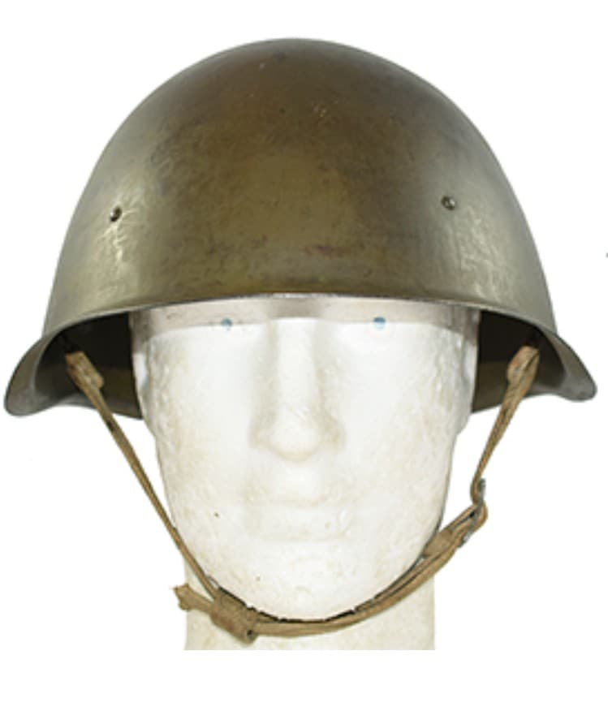
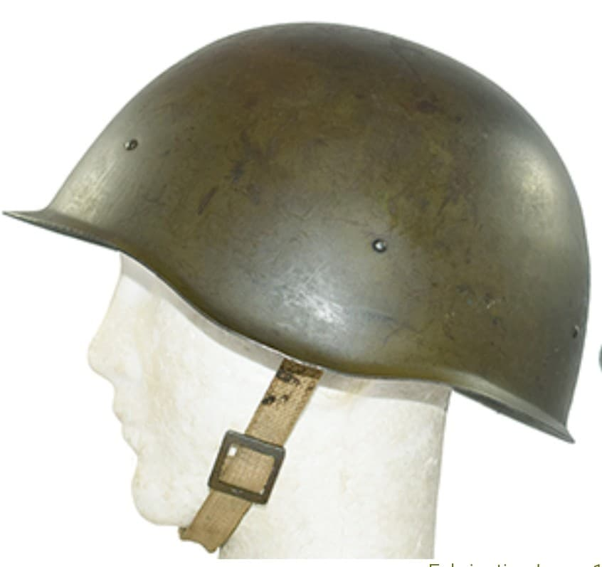
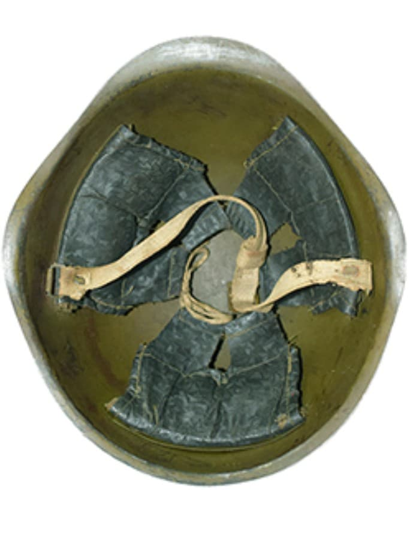

Le casque soviétique SSh‑40 est le modèle le plus répandu de l’Armée rouge durant la Seconde Guerre mondiale. Introduit en 1940, il est conçu pour être robuste, simple à produire et adapté aux besoins massifs du front de l’Est.
Il devient le casque standard soviétique jusqu’à la fin du conflit, et restera en service dans plusieurs pays du bloc de l’Est après 1945.

Le SSh‑40 se distingue par ses 3 rivets latéraux (au lieu de 6 sur le SSh‑39), sa coque arrondie et son liner simplifié. Il est conçu pour être produit en très grande quantité tout en restant fiable.
Sa peinture verte mate et son design épuré en font un casque emblématique des soldats soviétiques durant la Grande Guerre patriotique.


Le SSh‑40 est porté durant :
Il devient l’un des symboles visuels de l’Armée rouge durant la Grande Guerre patriotique.